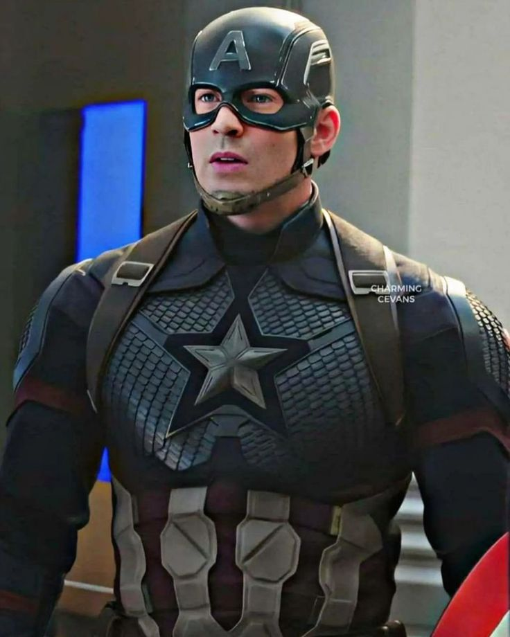

<!-- HTML <picture> элемент -->

<!-- Элемент HTML <picture> позволяет отображать разные изображения
в зависисмости от устройства или размера экрана.    
-->

<!-- 
Элемент HTML <picture> предоставляет веб-разработчикам больше 
возможностей для указания ресурсов изображений.

Элемент <picture> содержит один или несколько элементов <source>,
каждый из которых ссылается на разные изображения с помощью атрибута 
'srcset'. Таким образом , браузер может выбрать изображение , 
которое лучше всего подходит для текущего вида и/или утсройства.

У каждого <source> элемента есть 'media' атрибут , который опрееляет 
, когда изображение ьудет наиболее подходящим.
-->

<picture>
<source srcset="assets/img/hawkey.jpg" media="(min-width:900px) and (max-width:1000px)">
<source srcset="assets/img/iron-man.avif" media="(max-width:500px)">

</picture>


<!-- Примечание: всегда указывайте элемент  в качестве последнего 
 дочернего элемента <picture>. Элемент  испольщуется браузерами,
которые не подерживают элемент <picture> , а также в случаях ,
когда ни один из тегов <source> не подходит. 
-->